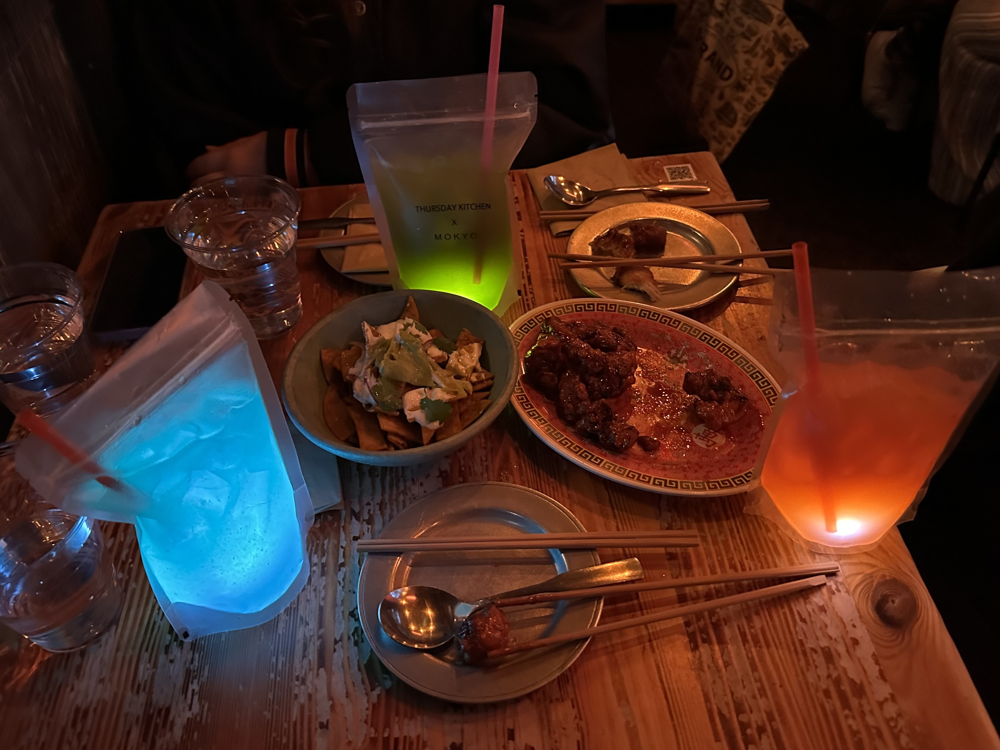
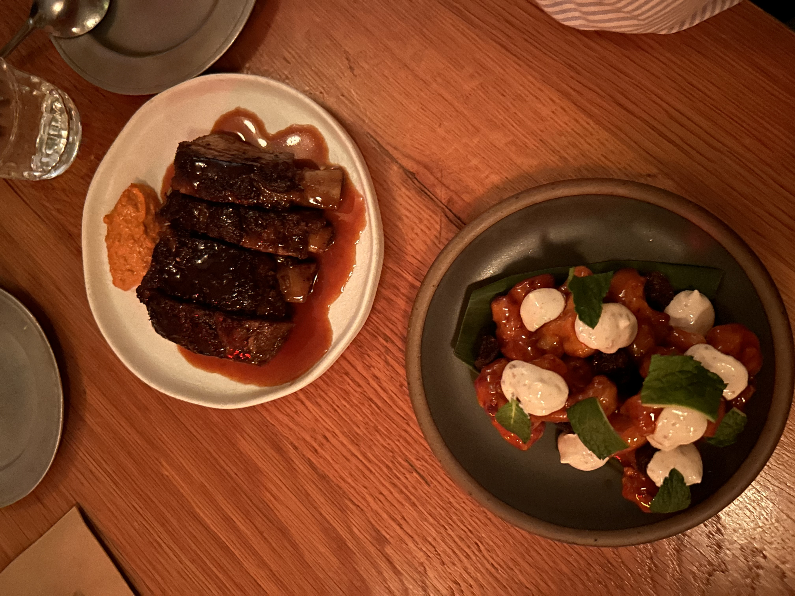
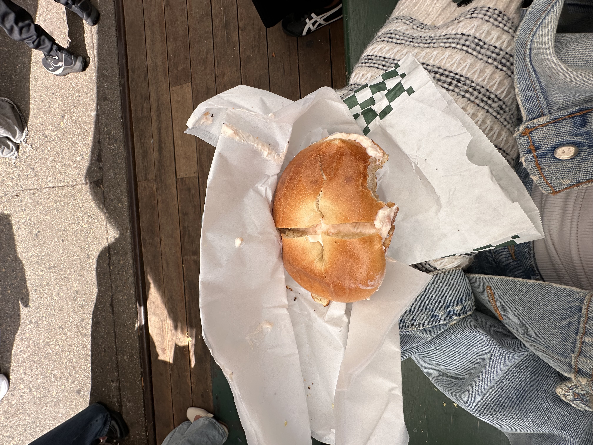
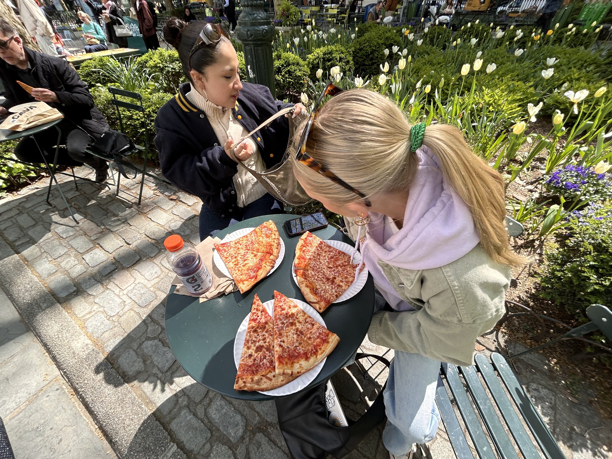
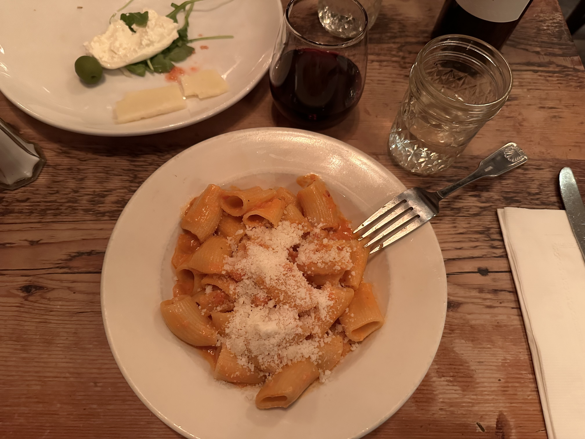
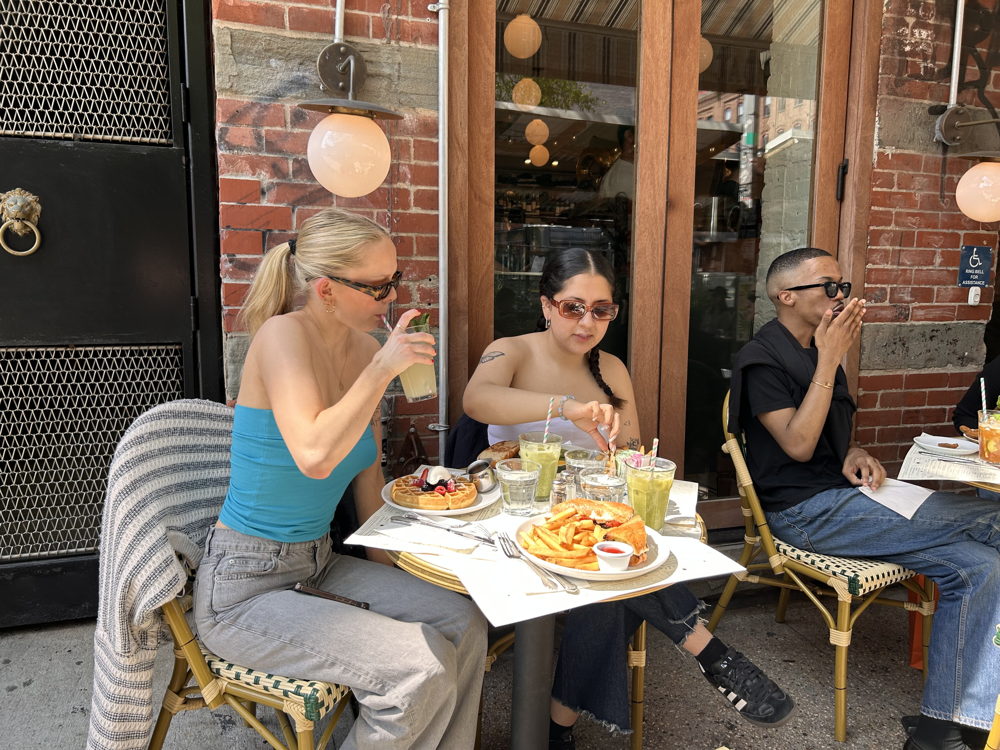

Thursday Kitchen
Jättegoda asiatiska tapas med ännu bättre självlysande drinkar! Detta var faktiskt vårt första restaurang besök under resan, vi fick vänta på bordet ganska länge då det är väldigt populärt men det visade sig vara värt det.

Mokyo
Systerrestaurang till Thursday Kitchen med ännu godare tapas. Här åt jag de godaste ribsen i mitt liv. Asså wooow kolla bara på bilden, vattnas i munnen just nu.

Leons Bagel´s
Otroliga bagels! Räkna med att det kan vara lång kö, men det är värt väntan. Jag tog en klassisk bagel med extra creamcheese och rökt lax. Den var riktigt banger!

99 cent pizza Times Square
Klassisk New York-pizza. Gott, prisvärt och den enda riktiga 99 cent-pizzan vi kunde hitta som fanns kvar. Vi var faktiskt på många liknande pizza ställen men de hade alla ändrat till one dollar eller mer i sina priser.

San Marzano
Ett billigare alternativ för pasta. Väldigt gott och mysigt ställe.

Jack´s Wife Freda
Najs brunch ställe! Perfekt för "celebrity spotting" då det är där kändisarna brukar hänga. Ligger i ett perfekt område i Brooklyn nära många bra secondhand-butiker.
